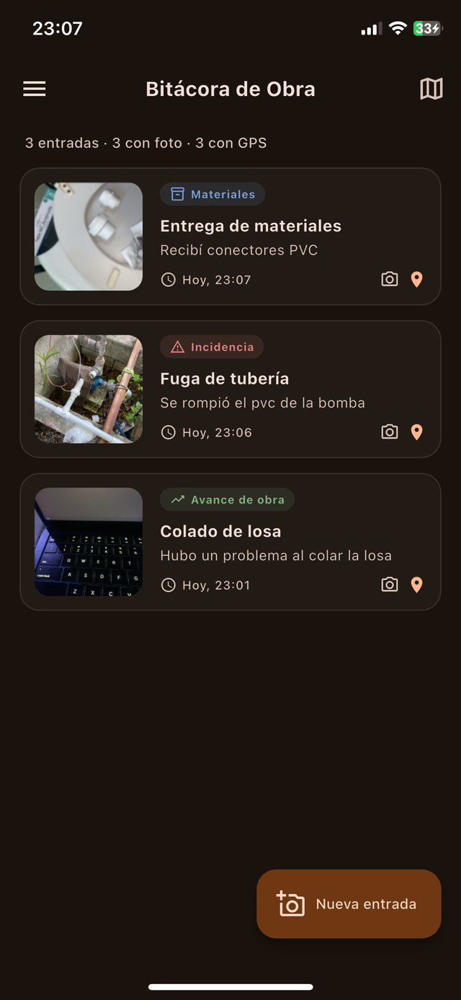
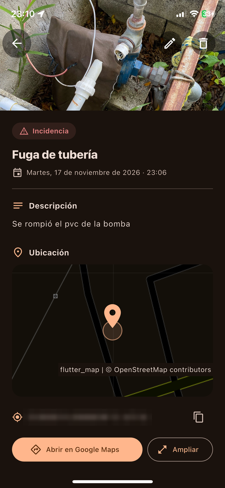
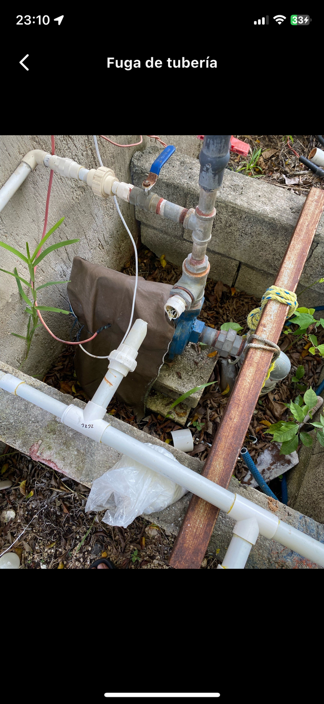
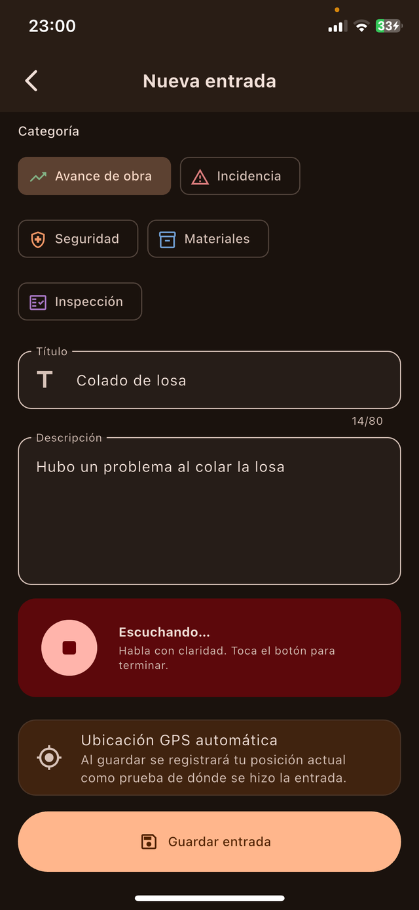
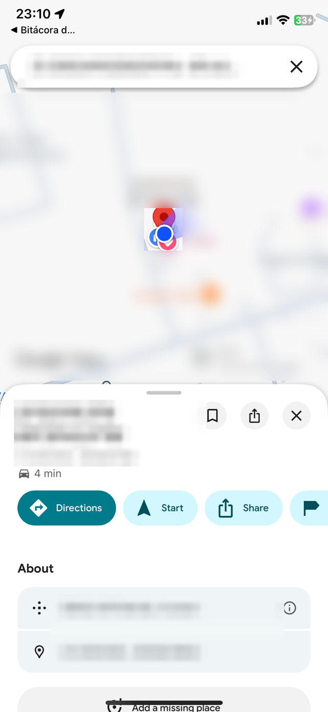
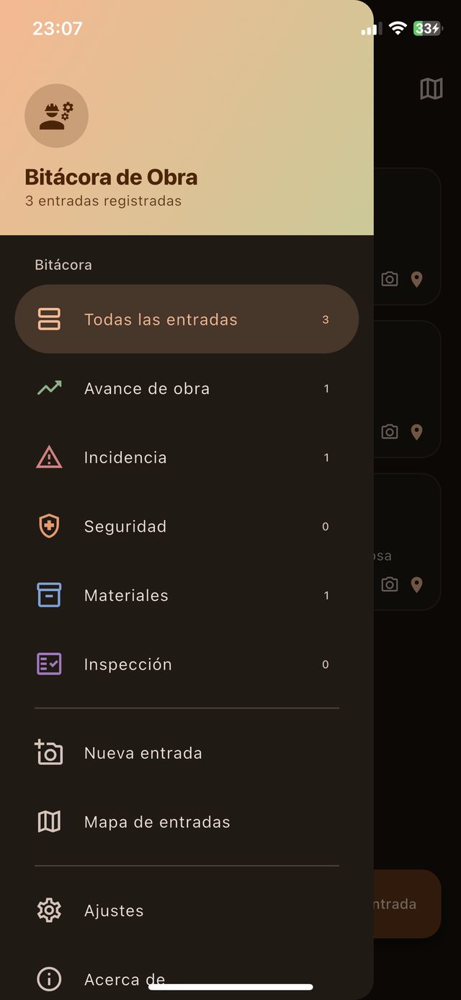
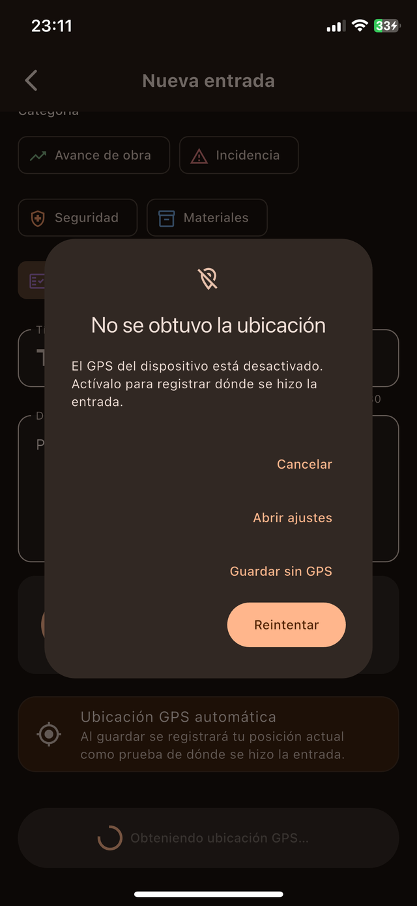

Un diario de campo en el teléfono: cada registro lleva foto, texto dictado y ubicación GPS.


La libreta se daña en la obra y con ella todo el historial.
La evidencia queda suelta en la galería, sin texto ni fecha.
No se puede demostrar dónde se hizo cada registro.
Con guantes y prisa nadie escribe párrafos en el teléfono.
engineeringPara residentes y supervisores de obra, contratistas y técnicos de campo.

Foto con la cámara o de la galería, ligada al texto y la fecha.

La voz se convierte en texto en vivo, sin quitarse los guantes.
Se guarda la posición al guardar; se ve en un mapa y en Google Maps.
Lista de registros con foto, fecha y GPS
Foto, categoría y descripción dictada
Se captura el GPS y se muestra en el mapa

Un botón lleva a Google Maps

La estructura de cada pantalla. El menú lateral filtra por categoría y muestra cuántos registros hay.
/ lista · /entrada detalle · /entrada/nueva formulario
La foto "vuela" de la lista al detalle y de ahí a pantalla completa.
Transiciones entre pantallas y un micrófono que reacciona al volumen de la voz.
entradasSharedPreferences guarda las preferencias: tema, orden e idioma del dictado.
Carga los registros sin congelar la pantalla y muestra cada estado:
Los errores de GPS, cámara, micrófono o base de datos se convierten en mensajes claros para el usuario.

GPS apagado: la app ofrece reintentar, abrir ajustes o guardar sin ubicación.
Siguiente paso: sincronizar en la nube para equipos, exportar la bitácora a PDF y firmar los registros.